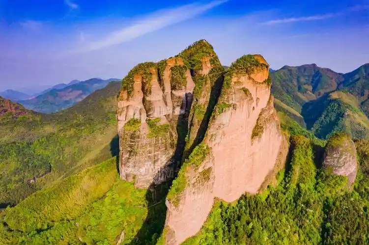
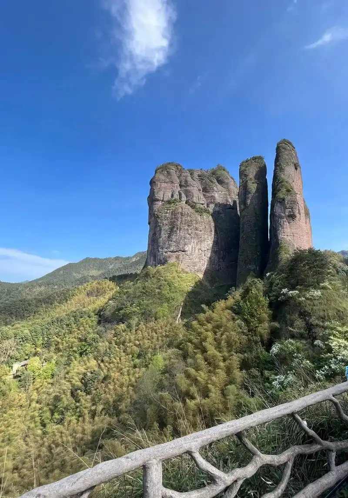
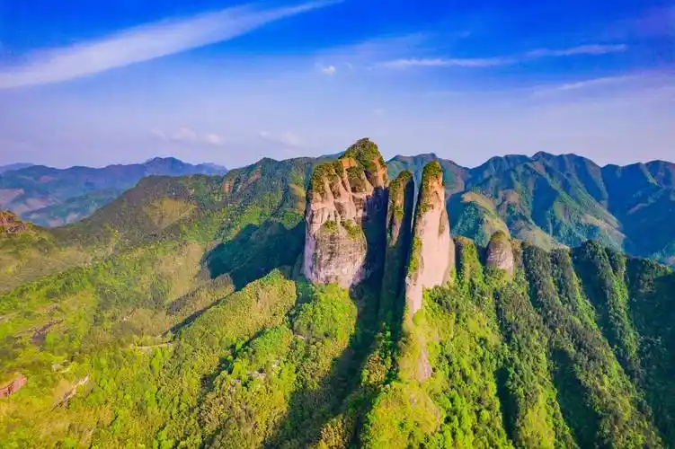
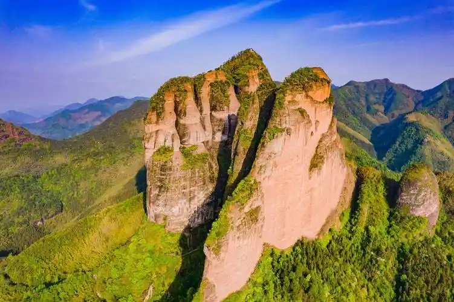
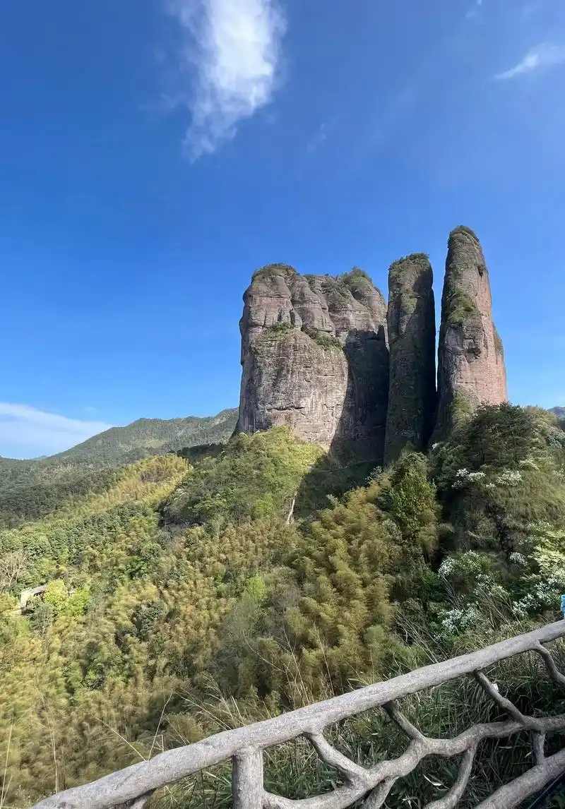
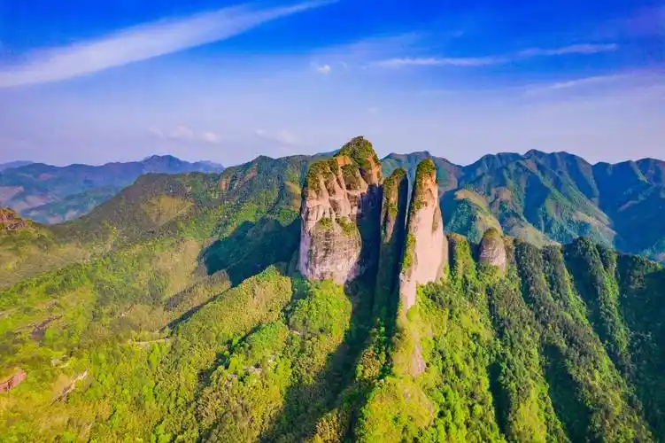

Historical Background
Mount Jianglang, located in Jiangshan County, Zhejiang Province, China, has a rich and storied history dating back thousands of years. It is not only a place of natural beauty but also a site of significant cultural and historical importance.
Early History
The earliest recorded history of Mount Jianglang dates back to the Neolithic period, where archaeological findings suggest that early human settlements existed in the area. The mountain's strategic location and abundant natural resources made it an ideal place for early inhabitants.
Imperial Period
During the Imperial period, Mount Jianglang gained prominence as a religious and cultural center. Many temples and shrines were built on the mountain, attracting pilgrims and scholars from across the region. The mountain was also a favorite retreat for poets and artists, who were inspired by its natural beauty and spiritual atmosphere.
 





Modern Era
In the modern era, Mount Jianglang has become a popular tourist destination. The local government has invested in infrastructure and conservation efforts to preserve the mountain's natural and cultural heritage. Today, visitors can explore ancient temples, scenic trails, and historical sites, making it a must-visit destination for those interested in Chinese history and culture.
Notable Figures
Several notable figures in Chinese history have visited Mount Jianglang, including poets such as Li Bai and Du Fu, who wrote poems praising the mountain's beauty. Emperors and empresses also visited the mountain, leaving behind inscriptions and artifacts that are still visible today.
Cultural Significance
Mount Jianglang is not only a place of natural beauty but also a symbol of Chinese culture and tradition. The mountain is featured in many Chinese literary works and is considered a sacred site by many. Its cultural significance continues to attract visitors and scholars from around the world.